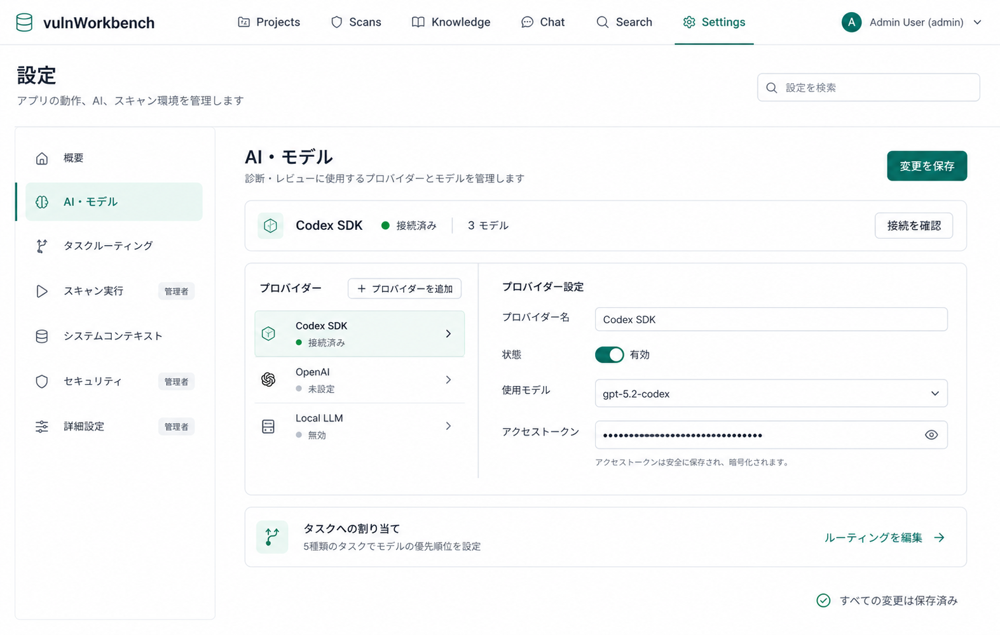

1fcf734134f4e3d5d91dc3601a05e0280644d8ff/settingsこの文書は、承認済みモックアップを既存の設定機能へ接続するための固定仕様、変更境界、 実装順序、テスト、受け入れ条件を定義する。実装中に情報設計または権限境界を変更する必要が 生じた場合は、コードより先に本書を更新する。
実装完了日: 2026-08-24。URL連携、権限別カテゴリ、カテゴリ検索、Runtime 3分割、 resource別の未保存状態、離脱確認、responsive shell、対象unit testとbrowser E2Eを実装した。
Terraは、本書のWork Package 0から順に実装する。各Work Packageの完了条件と対象testが 成功するまで次へ進まない。記載のないbackend変更、共通UIの全面整理、命名変更は行わない。 実装中の既定判断は次で固定する。
as any、新しい依存package、feature flag、backend
fallbackを追加しない。
計画書レビュー時点で、次のファイルにはユーザー所有の変更がある。設定画面実装では編集、
rollback、整形を行わない。特にapi/routes/settings.route.tsは読取専用とし、
frontendは現在のAPI契約へ合わせる。
api/cli/runtime-isolation-auto-configure.tsapi/modules/runtime-isolation/runtime-isolation-auto-config.tsapi/modules/runtime-isolation/runtime-isolation-auto-config.test.tsapi/routes/settings.route.tsapi/routes/settings.route.test.tspackage.jsonscripts/scanner-e2e.tsscripts/docker-image-retention.tsと対応testweb/src/styles-scans.css
作業開始時と各Work
Package終了時にgit status --shortを確認し、上記以外にも
ユーザー変更が増えていれば同様に保護する。本計画自身、仕様書index、承認済みモックアップは
この設定画面タスクの成果物として扱う。
文書レビューで、routeの所有位置、provider状態の判定、Runtime全fieldの移設先、dirty比較、 即時Runtime操作、離脱確認、E2E fixtureを固定した。実装開始を妨げる未決定のプロダクト仕様はない。 Terraは追加のデザイン判断を行わずWork Package 0から開始できる。
現在の設定画面は、Runtime、System Context、Runtime Settings、LLM Providers、Task Routingを一つの長い縦画面に配置している。既存機能は保たれているが、目的の設定を探すまでの スクロール量が多く、保存対象と管理者専用領域も把握しにくい。
改修後は、URLと連動する設定カテゴリを左側に固定し、右側には選択中のカテゴリだけを 表示する。既存APIと保存単位は維持し、画面の分割、状態表示、文言、レスポンシブ対応を フロントエンド内で実現する。
/settings?section=...を選択状態の正とする。
モックアップは情報設計と視覚優先順位の基準であり、表示する状態値は実データから導出する。 モックアップ上の「接続済み」などの例示値を固定文言として実装しない。
| ファイル | 現在の責務 | 改修時の扱い |
|---|---|---|
web/src/settings-panel.tsx |
LLM、Runtime、接続確認、保存処理を一つのhookへ集約。 | API操作の正として維持し、resource別loading・error・dirty状態を追加する。 |
web/src/settings-panel-view.tsx |
全パネルを縦に直列配置。 | 設定シェルと選択カテゴリの組み立てへ置き換える。 |
web/src/settings-llm-providers-panel.tsx |
Codex状態、provider一覧、provider編集。 | Codexを含む統一provider一覧と単一の編集領域へ再構成する。 |
web/src/settings-task-routing-panel.tsx |
5 taskのprimary / fallback model編集。 | 独立カテゴリとして既存ロジックを再利用する。 |
web/src/settings-runtime-panel.tsx |
実行方式、resource limit、runtime isolation、DAST keyを一括表示。 | スキャン実行、セキュリティ、詳細設定の3表示パネルへ分割する。 |
web/src/settings-panel-model.ts |
provider、model、routeの純粋な変換と表示ラベル。 | 既存関数を維持し、状態表示とdirty判定用の純粋関数を追加する。 |
web/src/router.tsx |
/settingsを検索パラメータなしで表示。 |
sectionの検証とroute
componentへの受け渡しを追加する。
|
web/src/styles.css |
共通スタイルと設定画面固有スタイルが混在。 |
共通tokenは残し、設定固有selectorをstyles-settings.cssへ移す。
|
tests/e2e/release-readiness.spec.ts |
一般ユーザーの設定画面と管理者API境界を確認。 | カテゴリ権限、deep link、アクセシビリティの回帰を追加する。 |
GET /api/settings/llmと更新APIは管理者専用のまま維持する。GET /api/settings/runtimeと更新・鍵生成・自動設定APIは管理者専用のまま維持する。
updateLlmSettingsで保存する。| 表示名 | section |
権限 | 収容する既存機能 |
|---|---|---|---|
| 概要 | overview |
全ユーザー | app health、service、Git branch / commit、利用可能な設定の要約。 |
| AI・モデル | ai-models |
管理者 | Codex SDK、generic provider、model、credential、provider health。 |
| タスクルーティング | task-routing |
管理者 | 5 taskのprimary model、thinking depth、fallback順序。 |
| スキャン実行 | scan-execution |
管理者 | host / Docker、Docker image、memory、CPU、PID limit。 |
| システムコンテキスト | system-context |
全ユーザー | Agentic Search Promptと最終更新日時。 |
| セキュリティ | security |
管理者 | runtime isolation、資格状態、必須image / hash、DAST暗号鍵。 |
| 詳細設定 | advanced |
管理者 | stdout / stderr limit、concurrency、queue、timeout、任意scanner / DB image。 |
カテゴリ順序はモックアップどおり固定する。一般ユーザーには管理者専用カテゴリと 「管理者」badgeを表示しない。表示だけを隠す実装にはせず、該当APIも呼ばない。
現行TaskRoutingPanelにはcomponent内のadmin
guardがなく、member画面にも空のcardが 出る可能性がある。一方、LLM settings
APIはserverで管理者専用である。新画面では
タスクルーティングを管理者専用に揃える。これは意図した権限表示の修正であり、回帰ではない。
web/src/settings-navigation-model.tsのレジストリ値は次で固定する。
| ID | Icon | 説明 | 検索keyword |
|---|---|---|---|
overview |
House |
アプリと設定の状態を確認します | 状態、サービス、Git、更新 |
ai-models |
BrainCircuit |
診断・レビューに使用するプロバイダーとモデルを管理します | AI、LLM、Codex、OpenAI、モデル、APIキー、接続 |
task-routing |
GitFork |
タスクごとのモデルとフォールバックを設定します | タスク、ルーティング、primary、fallback、thinking |
scan-execution |
Play |
スキャナーの実行方式とDockerリソースを設定します | スキャン、実行、host、Docker、CPU、メモリ、PID |
system-context |
MessageSquareText |
エージェント検索で使用するコンテキストを編集します | システム、コンテキスト、Agentic Search、prompt |
security |
ShieldCheck |
隔離実行環境とDAST暗号鍵を管理します | セキュリティ、isolation、image、hash、DAST、暗号鍵 |
advanced |
SlidersHorizontal |
処理上限、タイムアウト、任意イメージを設定します | 詳細、limit、queue、timeout、scanner、database |
レジストリ型はid、label、description、
keywords、adminOnly、showAdminBadge、iconを必須とする。
labelとadminOnlyは7.1の表を使用し、別ファイルで再定義しない。
showAdminBadgeはモックアップどおりscan-execution、
security、advancedだけをtrueにする。
ai-modelsとtask-routingもadminOnlyだがbadgeは表示しない。
/settingsは変更しない。sectionを追加する。overviewはURLから省略し、canonical
URLを/settingsとする。
overviewを表示し、未知の値を別の文字列へcoerceしない。
Linkとして実装する。
replace: trueで/settingsへ戻す。
URL例:
/settings?section=ai-models
/settings?section=system-context
新規web/src/settings-route-search.tsの公開契約は次で固定する。
export const settingsSectionIds = [
"overview",
"ai-models",
"task-routing",
"scan-execution",
"system-context",
"security",
"advanced",
] as const;
export type SettingsSectionId = (typeof settingsSectionIds)[number];
export type SettingsSearch = { section?: Exclude<SettingsSectionId, "overview"> };
export function parseSettingsSearch(
search: Record<string, unknown>,
): SettingsSearch;
export function resolveSettingsSection(search: SettingsSearch): SettingsSectionId;
export function buildSettingsSectionSearch(section: SettingsSectionId): SettingsSearch;
parseSettingsSearchは既知値だけを返し、overviewと未知値は{}に正規化する。
resolveSettingsSectionはsearch.section ?? "overview"を返す。
buildSettingsSectionSearch("overview")は{}を返す。
settingsRouteへvalidateSearch: parseSettingsSearchを追加する。
Appへsection propは追加しない。
SettingsPanel内でuseSearch({ from: "/settings" })と
useNavigate({ from: "/settings" })を使う。route hookは子panelへ分散させない。
Settingsのactive表示を維持する。
| カテゴリ | Primary action | 保存resource |
|---|---|---|
| 概要 | なし | なし |
| AI・モデル | 変更を保存 | LLM settings全体 |
| タスクルーティング | 変更を保存 | LLM settings全体 |
| スキャン実行 | 変更を保存 | Runtime settings全体 |
| システムコンテキスト | 変更を保存 | System Context |
| セキュリティ | 変更を保存 | Runtime settings全体 |
| 詳細設定 | 変更を保存 | Runtime settings全体 |
既存panel内にある重複Save buttonは削除する。接続確認、自動設定、鍵生成、provider追加・削除は secondary actionとして本文内に残す。
sectionへ遷移し、検索語をクリアする。
ulにLinkとして表示し、独自combobox
roleを実装しない。
概要は設定値の編集画面にせず、既存データから次の状態だけを短く表示する。
providerの接続状態は、Codex statusまたは利用者が実行したhealth checkだけを根拠にする。 endpointが入力済みという理由だけで「接続済み」と表示しない。
| 種別 | 表示・編集するfield | 固定事項 |
|---|---|---|
codex |
enabled、apiKey、models
|
nameは「Codex
SDK」のread-only、kindは変更不可。
|
azure |
name、kind、enabled、endpoint、apiVersion、apiKey、models、modelDisplayNames
|
endpointと1件以上のmodelを必須とする。 |
openai /
openai-compatible /
local
|
name、kind、enabled、baseUrl、apiKey、models、modelDisplayNames
|
baseUrlと1件以上のmodelを必須とする。 |
bedrock |
name、kind、enabled、region、apiKey、models、modelDisplayNames
|
既存frontendどおり1件以上のmodelを必須とし、それ以外の必須条件を追加しない。 |
defaultModelCapabilityとmodelCapabilitiesはUIへ新設せず、draftと保存payloadで保持する。
modelsは現行どおりカンマ区切りのTextInputで複数編集する。
モックアップの単一selectへ縮退させず、labelを「利用可能なモデル」、helperを「カンマ区切りで入力」にする。
********はそのままpassword
fieldへ保持する。 sentinelを別値へ変換せず、利用者が新しい値を入力した場合だけ置換する。
selectedEndpointId /
selectedEndpointを
selectedProviderId /
selectedProviderへ置き換え、Codexも選択可能にする。 generic
providerだけが必要な処理ではselectedProvider.kind !== "codex"でnarrowingする。
| 優先順位 | 条件 | 表示 |
|---|---|---|
| 1 | enabled === false |
無効 |
| 2 | Codexでauthenticated === false |
認証が必要 |
| 3 | CodexでexecutableAdapterAvailable === false |
アダプターを利用できません |
| 4 | Codexが認証済みかつadapter利用可能 | 接続済み |
| 5 | generic providerに必須field不足 | 未設定 |
| 6 | 最新health resultがok |
接続済み |
| 7 | 最新health resultが失敗 | 接続エラー |
| 8 | 上記以外 | 未確認 |
この判定はderiveProviderStatusとしてsettings-panel-model.tsへ置き、
一覧、概要、component testから同じ関数を使う。
generic providerのhealth resultは、現行frontendが取得した現在の画面session内だけで保持する。 再読み込み後は「未確認」へ戻し、永続化済みhealth履歴を読む新APIは追加しない。
| 内部値 | 表示名 | 説明 |
|---|---|---|
finding_review |
Findingレビュー | 個別Findingの証拠と修正要否をレビューします |
scan_review |
スキャンレビュー | スキャン全体の結果と改善点をレビューします |
evidence_context |
証拠コンテキスト | Findingに関連する証拠コンテキストを生成します |
agentic_search |
エージェント検索 | Knowledgeを使用した検索応答を生成します |
report_summary |
レポート要約 | 診断レポートの要約を生成します |
Thinking表示はAuto / Low / Medium / High / Very highを
自動 / 低 / 中 / 高 / 最高へ変換し、送信値は変更しない。
RuntimeSettingsResponseと更新payloadは分割しない。3つのpanelは同じ
runtimeSettings
draftを部分編集し、保存時は既存の完全なpayloadを送信する。
| Field | カテゴリ | 表示 |
|---|---|---|
scanExecutionMode |
スキャン実行 | select |
allowHostScannerExecution |
スキャン実行 | checkbox / switch |
scanDockerImage |
スキャン実行 | text input |
dockerMemory |
スキャン実行 | text input |
dockerCpus |
スキャン実行 | number input、step 0.25 |
dockerPidsLimit |
スキャン実行 | number input |
scannerStdoutLimitBytes |
詳細設定 | number input |
scannerStderrLimitBytes |
詳細設定 | number input |
webProcessConcurrency |
詳細設定 | number input |
webScanQueueLimit |
詳細設定 | number input |
webScanStepTimeoutMaxSec |
詳細設定 | number input |
webScanWallClockTimeoutSec |
詳細設定 | number input |
codexSdkTimeoutMs |
詳細設定 | number input |
runtimeIsolation.qualificationVersion |
セキュリティ | read-only status |
runtimeIsolation.namespaceOwnerImage |
セキュリティ | text input |
runtimeIsolation.nodeImage |
セキュリティ | text input |
runtimeIsolation.materializerImage |
セキュリティ | text input |
runtimeIsolation.registryProxyImage |
セキュリティ | text input |
runtimeIsolation.probeImage |
セキュリティ | text input |
runtimeIsolation.httpExecutorImage |
セキュリティ | text input |
runtimeIsolation.dockerDaemonIdentityHash |
セキュリティ | text input |
runtimeIsolation.qualificationHash |
セキュリティ | text input |
runtimeIsolation.postgresImage |
詳細設定 | text input |
runtimeIsolation.mysqlImage |
詳細設定 | text input |
runtimeIsolation.nucleiImage |
詳細設定 | text input |
runtimeIsolation.zapImage |
詳細設定 | text input |
runtimeIsolation.schemathesisImage |
詳細設定 | text input |
runtimeIsolationConfigured |
セキュリティ | read-only status |
runtimeIsolationMissingFields |
セキュリティ | read-only list |
dastAuthEncryptionKey |
セキュリティ | password input |
dastAuthEncryptionKeyConfigured |
セキュリティ | read-only status |
dastAuthEncryptionKeySource |
セキュリティ | read-only status |
updatedAt |
3カテゴリ共通 | 保存状態の補助表示 |
表の全fieldをruntimeFieldSectionという型付き対応表へ定義する必要はないが、
component testでは上記input fieldが一度ずつrenderされることを確認する。read-only fieldを
RuntimeSettingsUpdateへ混入させない既存のdestructureを維持する。
autoConfigureRuntimeIsolationはrequest
bodyを送らずserver上の現在値を更新するため、
runtimeDirty中はbuttonを無効化する。未保存draftを破棄して実行する選択肢は追加しない。
generateDastAuthEncryptionKeyはRuntime
draft全体を送信するため、意図しない同時保存を
防ぐ目的でruntimeDirty中はbuttonを無効化する。
aria-busyを更新し、二重送信を防ぐ。
比較対象は表示用response全体ではなく、既存APIへ送るcanonical inputとする。
type LlmSettingsInput = Pick<
LlmSettingsResponse,
"providerEndpoints" | "taskRoutes"
>;
function toLlmSettingsInput(value: LlmSettingsResponse): LlmSettingsInput;
function toRuntimeSettingsInput(
value: RuntimeSettingsResponse,
): RuntimeSettingsUpdate;
const llmProviderDirty = !sameJson(
draft.providerEndpoints,
baseline.providerEndpoints,
);
const taskRoutingDirty = !sameJson(
ensureRoutes(draft.taskRoutes),
ensureRoutes(baseline.taskRoutes),
);
const llmDirty = llmProviderDirty || taskRoutingDirty;
const runtimeDirty = !sameJson(
toRuntimeSettingsInput(runtimeDraft),
toRuntimeSettingsInput(runtimeBaseline),
);
const systemContextDirty = systemContextText !== savedSystemContextText;
const settingsDirty = llmDirty || runtimeDirty || systemContextDirty;
sameJsonはこの既存のJSON互換設定型に限りJSON.stringify比較を使う。
updatedAtとRuntimeのread-only派生fieldはdirty比較から除外する。
********を含むmasked secretもserver
responseの一部として比較し、特別に空文字へ変換しない。
savedSystemContextTextはmount時とsystemContextUpdatedAt変更時だけ
systemContextTextへ同期し、入力中のprop変更ではbaselineを動かさない。
llmProviderDirtyだけの時は「AI・モデルに未保存の変更があります」、
taskRoutingDirtyだけの時は「タスクルーティングに未保存の変更があります」、
両方なら「AI・モデルとタスクルーティングに未保存の変更があります」と表示する。
llmProviderDirtyであり、routeだけのdirtyでは無効化しない。
SettingsPanelPropsへonDirtyChange: (dirty: boolean) => voidを追加する。
AppはsettingsDirtyを保持し、SettingsPanelのmount終了時にfalseへ戻す。
SettingsPanelはuseBlockerを一度だけ使用する。
current.pathnameとnext.pathnameが共に/settingsならblockしない。
enableBeforeUnloadはsettingsDirtyと同じ条件にする。
App.handleLogoutでも同じ文言を確認し、cancel時はlogout
APIを呼ばない。
useSettingsPanelModelへ追加する状態とloaderは次で固定する。
| Resource | 状態 | Loader |
|---|---|---|
| LLM settings |
llmSettings、llmBaseline、llmLoading、llmSaving、llmError
|
loadLlmResource |
| Codex status |
codexStatus、codexLoading、codexError
|
loadLlmResource内で並列取得、再確認時はreloadCodexStatus
|
| Runtime |
runtimeSettings、runtimeBaseline、runtimeLoading、runtimeSaving、runtimeError
|
loadRuntimeResource |
| System Context |
既存props、savedSystemContextText、systemContextError
|
取得は既存App.loadSystemContextを維持 |
loadLlmResourceはfetchLlmSettingsとfetchCodexStatusを
Promise.allSettledで並列実行する。
ensureCodexEndpointをdraftとbaselineの両方へ適用し、
detected modelの追加だけでdirtyにならないようにする。
setErrorTextを使わずpanel内errorを使う。
401は既存UNAUTHORIZED_EVENT_NAMEでApp全体へ通知される。
nav aria-label="設定カテゴリ"を使用し、選択項目へaria-current="page"を付ける。
240px minmax(0, 1fr)、provider
cardはminmax(240px, 320px) minmax(0, 1fr)とする。
top: 80pxとする。
--color-page、--color-surface、--color-border、--color-brand、--color-brand-softを使用し、新しいbrand
colorを追加しない。
画面、状態、APIの責務は次の境界で分ける。
/settings?section=ai-models
└─ SettingsPanel
├─ useSettingsPanelModel
│ ├─ LLM settings draft / baseline / load / save
│ ├─ Runtime settings draft / baseline / load / save
│ └─ System Context draft / baseline / save
└─ SettingsPanelView
└─ SettingsShell
├─ SettingsSearch
├─ SettingsNavigation
└─ selected section panel
SettingsPanelModelを各panelへ渡す形を維持し、この変更ではdomain
hookや
Contextを新設しない。必要な純粋関数だけをsettings-panel-model.tsへ追加する。
as anyを追加しない。
SettingsPanelPropsの最終形は、既存propsからsetErrorTextを削除し、次を追加する。
type SettingsPanelProps = {
isAdmin: boolean;
appHealth: AppHealth | null;
sourceHealth: SourceHealth | null;
systemContextText: string;
systemContextUpdatedAt: string | null;
systemContextSaving: boolean;
onSystemContextTextChange: (value: string) => void;
onSystemContextSaved: (systemContext: string, updatedAt: string) => void;
onSystemContextSavingChange: (saving: boolean) => void;
onDirtyChange: (dirty: boolean) => void;
};
SettingsPanelがroute
search、権限fallback、離脱確認、model生成を所有する。
SettingsPanelViewはactive
sectionをswitchし、選択したpanel一つだけをrenderする。
既存の各編集panelは{ model: SettingsPanelModel }を受け取る形を維持する。
type SettingsShellProps = {
activeSection: SettingsSectionId;
isAdmin: boolean;
searchQuery: string;
onSearchQueryChange: (value: string) => void;
onSearchDismiss: () => void;
children: ReactNode;
};
SettingsShellはAPI状態やdraftを受け取らない。SettingsPanelViewがsearchQueryのlocal stateだけを所有し、modelへ追加しない。
buildSettingsSectionSearchから生成する。Button、TextInput、SelectInput、TextAreaを再利用する。
ui.tsxへ追加せず、設定画面内のsemantic
HTMLとCSSで表現する。
| ファイル | 操作 | 内容 |
|---|---|---|
web/src/settings-route-search.ts |
追加 | SettingsSectionId、既知値判定、default、search parser。 |
web/src/settings-navigation-model.ts |
追加 | カテゴリレジストリ、権限filter、検索、説明、keyword。 |
web/src/settings-shell.tsx |
追加 | ページ見出し、検索、desktop nav、mobile select、content領域。 |
web/src/settings-overview-panel.tsx |
追加 | 既存healthと設定resourceの要約、注意状態の導線。 |
web/src/settings-system-context-panel.tsx |
追加 | 現行System Context formを独立panelへ移す。 |
web/src/settings-runtime-fields.tsx |
追加 | Runtimeのtext / number fieldとruntime isolation更新helper。 |
web/src/settings-scan-execution-panel.tsx |
追加 | 実行方式、host許可、Docker imageとresource。 |
web/src/settings-security-panel.tsx |
追加 | runtime isolation必須field、資格状態、DAST暗号鍵。 |
web/src/settings-advanced-panel.tsx |
追加 | process limit、queue、timeout、任意image。 |
web/src/settings-runtime-panel.tsx |
削除 | 3つの新Runtime panelへ全fieldとhelperを移した後に削除する。 |
web/src/settings-panel.tsx |
変更 | route hook、権限fallback、resource別load/error/baseline/dirty/retry、離脱確認を追加。 |
web/src/settings-panel-view.tsx |
変更 | 直列配置を廃止し、sectionごとのpanel選択へ置き換える。 |
web/src/settings-llm-providers-panel.tsx |
変更 | 統一provider一覧、状態card、日本語文言、詳細設定の整理。 |
web/src/settings-task-routing-panel.tsx |
変更 | カテゴリ見出し、説明、validation、save状態へ合わせる。 |
web/src/settings-panel-model.ts |
変更 | status導出、draft比較、provider初期選択の純粋関数。 |
web/src/router.tsx |
変更 |
/settingsへvalidateSearchだけを追加する。
|
web/src/App.tsx |
変更 |
settingsDirty、onDirtyChange、Logout離脱確認を追加し、SettingsPanelへの
setErrorText受け渡しを削除する。
|
web/src/styles-settings.css |
追加 | 設定シェル、nav、provider、status、responsive専用スタイル。 |
web/src/styles.css |
変更 |
.settings-*、.llm-*、.codex-*、
.endpoint-*、.provider-*、.route-*と対応media
ruleを移す。
.panel、.actions、.form-stack、.meta-listは残す。
|
web/src/main.tsx |
変更 | styles-settings.cssを読み込む。 |
web/src/settings-route-search.test.ts |
追加 | 既知値、unknown、overview省略、URL builder。 |
web/src/settings-navigation-model.test.ts |
追加 | 順序、admin filter、検索keyword、secret非検索。 |
web/src/settings-panel-model.test.ts |
変更 | provider status、baseline比較、既存normalizeの回帰。 |
web/src/settings-panel-view.test.tsx |
追加 | カテゴリ別render、権限、保存状態、loading / error / empty。 |
web/src/settings-llm-providers-panel.test.tsx |
追加 | Codex / generic field、status優先順位、masked secret、health disabled。 |
web/src/settings-task-routing-panel.test.tsx |
追加 | 5 task、thinking、fallback、validation、保存payload。 |
web/src/settings-runtime-panel.test.tsx |
追加・変更 | 新しい3panelを対象に更新し、legacy responseと全field所属を回帰確認する。 |
tests/e2e/settings.spec.ts |
追加 | admin / member、URL履歴、保存、検索、390px、axe。 |
settings-runtime-panel.tsxは新panelへの移行完了後に削除する。移行途中では
再export adapterを置かず、同じ変更内でimport先とテストを切り替える。
Terraが編集してよい範囲は、9の表にあるfrontend、test、本計画書だけとする。
spec/index.htmlとモックアップは既に登録済みのため、リンク切れ修正以外では変更しない。
次のいずれかが起きた場合は推測で範囲を広げず、作業を止めて報告する。
as anyが必要になる。
停止報告には、失敗command、最初のerror、影響するWork Package、変更済みファイル、 安全に継続できる代替案を含める。
git status --shortを保存し、1.2の保護対象と照合する。/settingsのスクリーンショットを採取する。
保存先は.artifacts/settings-redesign/before-admin.pngと
.artifacts/settings-redesign/before-member.pngとする。 local
loginまたはserverを利用できない場合は、理由をbaseline記録へ残し、既存component / E2Eの
結果を代替baselineとして続行する。ここではユーザーへ確認を求めない。
bunx vitest run \
web/src/settings-panel-model.test.ts \
web/src/settings-runtime-panel.test.tsx \
web/src/api/runtime-settings.test.ts
bun run typecheck:app
bun run build:web
bunx playwright test tests/e2e/release-readiness.spec.ts \
--grep "project path validation and member/admin boundaries"
完了条件: 変更後に比較できる画面・テスト・項目対応表が揃っている。
SettingsSectionIdとparseSettingsSearchを追加する。
sectionを検証し、SettingsPanel内のroute
hookから読む。
bunx vitest run \
web/src/settings-route-search.test.ts \
web/src/settings-navigation-model.test.ts
bun run typecheck:app
完了条件: URLだけで選択カテゴリが決まり、権限外APIを呼ばない。
bunx vitest run web/src/settings-panel-view.test.tsx
bun run typecheck:app
完了条件: 一般ユーザーが概要とSystem Contextを利用でき、管理者項目は見えない。
bunx vitest run \
web/src/settings-panel-model.test.ts \
web/src/settings-llm-providers-panel.test.tsx
bun run typecheck:app
完了条件: 既存provider機能を一つのカテゴリ内で完了でき、接続状態が実データと一致する。
bunx vitest run \
web/src/settings-panel-model.test.ts \
web/src/settings-task-routing-panel.test.tsx
bun run typecheck:app
完了条件: 5 taskすべてを編集でき、既存validationと保存payloadが変わらない。
bunx vitest run \
web/src/settings-runtime-panel.test.tsx \
web/src/api/runtime-settings.test.ts
bun run typecheck:app
完了条件:
RuntimeSettingsResponseの全fieldが重複・欠落なく一つのカテゴリへ所属する。
bunx vitest run \
web/src/settings-panel-model.test.ts \
web/src/settings-panel-view.test.tsx
bun run typecheck:app
完了条件: 保存状態が正しく、通信失敗やカテゴリ移動で入力を失わない。
styles-settings.cssを実装する。bunx playwright test tests/e2e/settings.spec.ts
bunx playwright test tests/e2e/release-readiness.spec.ts \
--grep "project path validation and member/admin boundaries"
bun run build:web
完了条件: モックアップの主要構造を満たし、serious / criticalなaxe違反がない。
.artifacts/settings-redesign/after-admin.png、
after-member.png、after-mobile-390.pngへ保存する。
bun run typecheck:app
bunx biome check \
web/src/App.tsx \
web/src/router.tsx \
web/src/main.tsx \
web/src/settings-*.ts \
web/src/settings-*.tsx \
web/src/styles-settings.css \
tests/e2e/settings.spec.ts
bun run test:web
bunx playwright test tests/e2e/settings.spec.ts
bun run build:web
bun run docs:check
git diff --check
ユーザー所有の変更を巻き込むため、bun run formatやrepository全体への
biome --writeは実行しない。formatが必要な場合は9の対象ファイルだけに限定する。
| レイヤー | 主な確認 | 実行例 |
|---|---|---|
| Pure unit | section parser、権限filter、検索、status、dirty、provider初期選択。 | bunx vitest run web/src/settings-*-model.test.ts |
| Component | 選択panelだけの表示、admin badge、field所属、button disabled、error / empty。 | bunx vitest run web/src/settings-*.test.tsx |
| Existing regression | Runtime legacy response、LLM route normalization、member API 403。 | bun run test:web |
| E2E desktop | deep link、戻る・進む、検索、編集、保存、health、runtime action。 | bunx playwright test tests/e2e/settings.spec.ts |
| E2E permission | 一般ユーザーのカテゴリ・検索結果・API call境界。 | bunx playwright test tests/e2e/release-readiness.spec.ts |
| E2E responsive / a11y | 390px、keyboard、focus、serious / critical axe violation。 | bunx playwright test tests/e2e/settings.spec.ts |
| Build gate | TypeScript、production bundle、document構造。 | bun run typecheck && bun run build:web && bun run docs:check |
@testing-library/reactはないため追加しない。純粋関数はVitest、
静的componentはrenderToStaticMarkup、interactionとhook orchestrationは
Playwrightで検証する。
SettingsPanelViewの静的testは、
createMemoryHistory、最小route
tree、RouterProviderで囲み、
await router.load()後にrenderする。production
routerをtest用に変更しない。
tests/e2e/settings.spec.tsはpage.route("**/api/**")で設定APIをmockし、
provider保存、Runtime保存、鍵生成、自動設定を実環境へ送信しない。
updatedAtを付けて返す。
release-readiness.spec.tsだけで確認し、
新E2Eから実設定を変更しない。
/settingsを開くと概要を表示する。?section=ai-modelsの再読み込みでAI・モデルを復元する。********が維持される。
| リスク | 対策 |
|---|---|
| Runtime field分割時の欠落。 | 型の全key対応表とcomponent testで、全fieldが一度だけ表示・送信されることを確認する。 |
| LLM providerとrouteの共有draftが利用者に分かりにくい。 | 両カテゴリで同じ保存状態を表示し、保存APIが両方を保存することをhelper textで明示する。 |
| 未保存値に対するhealth checkが古いserver値を検査する。 |
llmProviderDirtyまたは未作成providerではhealth
checkを無効化する。
|
| 権限外sectionのdeep linkで管理者APIが発火する。 | fetch effectより前にsection accessを解決し、member E2Eでrequestを監視する。 |
| resourceを一括取得すると、一件の失敗で画面全体が使えない。 | LLMとRuntimeを独立loadし、resource単位でerrorとretryを持つ。 |
| 日本語化でAPI値まで変更される。 | label mappingとenum valueを分離し、送信payloadのsnapshot testを追加する。 |
| 設定固有CSSの移動で他画面が崩れる。 |
共通selectorはstyles.cssへ残し、.settings-*だけを移す。
|
| Runtime自動設定が未保存draftをserver値で上書きする。 |
runtimeDirty中は即時操作を無効化し、保存後だけ実行可能にする。
|
| Codex status再取得でdetected modelsがdirty扱いになる。 | 再取得結果をLLM draftとbaselineの両方へ同じようにmergeする。 |
| Logout時にSettingsPanelが先にunmountして離脱確認が消える。 |
Appにもdirtyを通知し、logout
APIの前に同じ確認を行う。
|
| 既存のユーザー変更を整形または上書きする。 |
1.2と9.1のwrite boundaryを守り、各Work
Packageでgit statusを確認する。
|
SettingsPanelViewの組み立て変更として一度だけ行う。